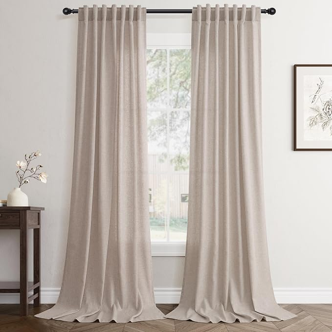

Your Ceiling Isn't Low. Your Curtain Rod Is.
In a compact room, the empty strip of wall above a window can make the ceiling feel lower than it is. The fix is often not new paint or furniture but a curtain rod placed near the ceiling and wide enough to let the fabric clear the glass.
The short version
- Mount the rod close to the ceiling rather than directly above the window frame, so the curtain fabric draws the eye upwards.
- Extend the rod 15–25cm beyond each side of the window so open curtains sit against the wall instead of hiding the glass.
- Choose curtain length before colour or pattern; a 96-inch (244cm) panel suits many ceiling-height installations.
- Skip the high rod if the curtain cannot reach the floor cleanly, because a short panel makes the installation look accidental rather than taller.
As an Amazon Associate I earn from qualifying purchases. Links below are affiliate links (#ad) - they cost you nothing extra. Nothing here is a paid placement, and no brand sees this page before it goes up.
The empty wall above the window is making the room look shorter
A rod fixed at the top of the window frame leaves a visible band of wall between the curtain and ceiling. In the comparison photographs, that gap is exactly what makes the same ceiling appear lower: the curtain stops at the window instead of giving the eye a continuous vertical line.
Move the rod towards the ceiling and let the fabric run down towards the floor. The change is visual rather than structural, but it matters in a small bedroom or living room where every uninterrupted vertical line is easy to see; the second photograph keeps the same window and ceiling while making the wall read taller.


A wider rod makes the window feel larger without losing daylight
Take the rod 15–25cm past the window on each side. When the curtains are open, the panels can stack on the wall rather than covering the outer edges of the glass, so more of the existing daylight remains visible and the window reads wider.
Do not simply make the rod as wide as the wall allows. A cramped room still needs usable wall space around furniture, and a rod that cannot leave the panels clear of the glass misses the point; the useful target is the 15–25cm extension on each side, not maximum width.
Three checks prevent the taller-curtain fix from backfiring
Check the rod height before choosing the fabric. Hold the proposed mounting position near the ceiling and measure from there to the floor; ordering a pattern first is a poor shortcut if the finished curtains cannot reach the intended height.
Check 15–25cm of wall beyond each window edge. Measure from both sides of the frame before drilling, because the rod needs enough room for open panels to sit beside the glass rather than across it.
Check the curtain length against 244cm. A 96-inch panel is 244cm long, so compare that measurement with your actual rod-to-floor distance; a panel that is too short will expose the wall or floor gap you were trying to avoid, while an unsuitable longer length can create unwanted pooling.
What we would actually buy

Oatmeal linen curtains, 96 inch
The 96-inch (244cm) length is suited to the ceiling-height curtain approach when your measured rod-to-floor distance works with it. The oatmeal linen gives the full-height fabric a quiet finish rather than competing with the vertical line. Check your actual rod-to-floor measurement before ordering, and do not choose this length if it will leave the panels visibly short.
Best for: Soft, light-filled bedrooms
View on Amazon →paid link
Chunky jute rug, ivory
This rug can help anchor the lower part of a compact room while the curtains handle the vertical emphasis, giving the floor and full-height fabric a more deliberate relationship. Check the available floor area and how the rug will sit around existing furniture before buying. It is not the solution to a badly positioned curtain rod, so do not use it as a substitute for fixing the window treatment.
Best for: Layering texture underfoot
View on Amazon →paid linkIf you only do one thing
Measure the distance from your proposed near-ceiling rod position to the floor first, then mark a rod 15–25cm beyond each side of the window. Once those measurements work, choose the curtain length and only then decide on pattern or texture.
How we choose
We look for pieces that change how a small room works, not the cheapest option and not the most photographed one. Everything here has to survive a rental: no drilling, no permanent fittings, nothing that needs a second person to install.
Room images on this site are our own illustrations, not photographs of the products. We link to the retailer so you can see the real item.
Written and selected by Rooms and Roads · Updated August 2026 · links checked August 2026